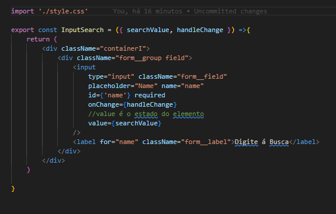
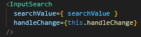

Input para fazer buscas na página
Neste exemplo esta sendo feito uma busca usando input
Criando elemento Com class
Primeiramente será criado um novo componente com os inputs/src/components/input/index.jsx
neste exemplo esta sendo usado uma função interna do javascript o
target
o Target captura o q esta sendo colocado no input
/src/template/home/index.jsx
o Target captura o q esta sendo colocado no input
/src/template/home/index.jsx
Criando elemento com função
/src/components/input/index.jsx 
/src/template/home/index.jsx

Agora depois de ter criado o elemento para fazer as buscas, será preciso criar a logica por trás.
- Passo 1: Primeiro passo, será criar o ponto de partida no estado, q neste exemplo
inciará vazio
state = {
searchValue: '';
} - Passo 2: será criar o metodo(evento) para fazer as buscas nos posts
- Passo 3: agora no render será preciso carregar o estado e o evento